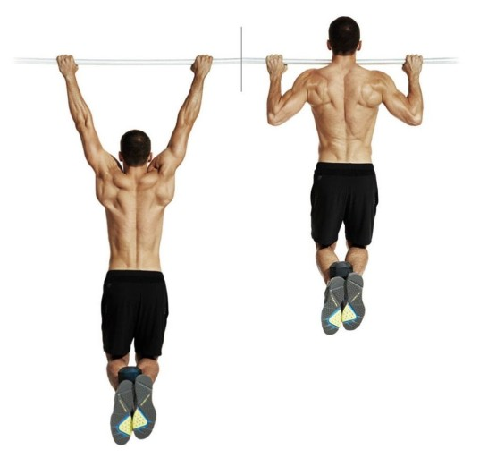

등
등은 승모근,광배근,견갑거근,대능형근,소능형근으로 구성되어 있으며, 등 근육이 약해지면 어깨가 처지고 , 기립근의 처짐으로 허리, 목 디스크의 증상이 올 수도 있습니다. 등 운동을 꾸준히 할 경우 우리몸의 어떤 변화가 생기는지 알아 보겠습니다.
- 상체 밸런스
등 운동을 꾸준히 할 경우 신체 밸런스를 유지하기 쉽고, 척추가 굽거나,어깨가 말리는 현상, 경추의 변형 등등 여러가지 문제를 해결 할 수 있습니다.미적으로 보기 좋아보이는 효과가 있습니다.
- 신진대사량
등 근육도 상체와 같이 큰 근육에 속합니다.그러므로 등 운동을 꾸준히 할 경우 신진대사가 활발해지고, 대사량 증가로 지방 관리에 용이해 질 수 있습니다.
- 상체근력 강화
등 근육을 강화 시키면 전체적인 상체근력이 강화 되는 것을 느낄 수 있습니다. 등 운동을 할때 상체 거의 모든 부위를 쓰기 때문에 전체적인 상체근력 강화에 좋습니다.
- 디스크 예방
현대사회에서 거북목 ,굽은등은 컴퓨터 작업을 많이 하는 요즘 연령,성별 관계없이 호발하고 있습니다. 이러한 증상들은 등 근력을 키워 예방 할 수 있습니다.
